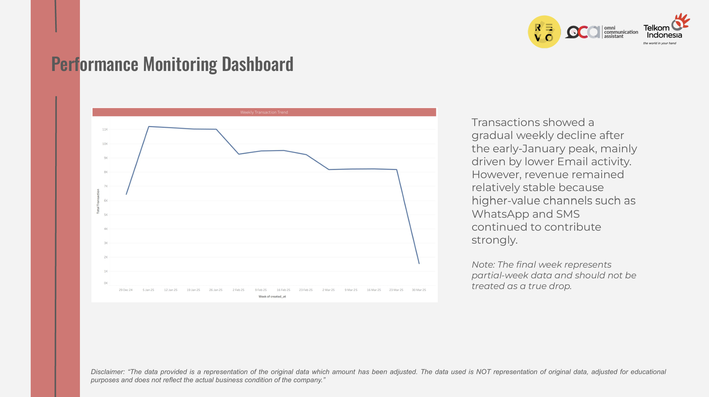
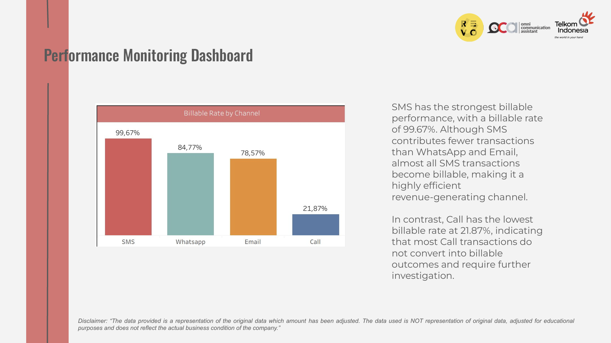
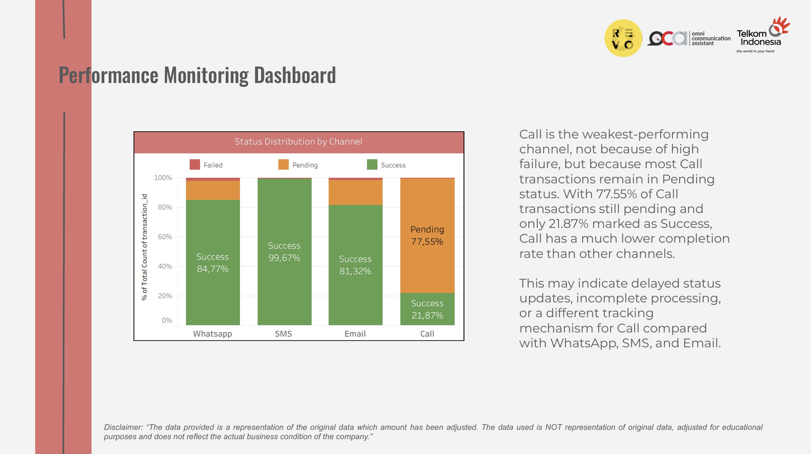
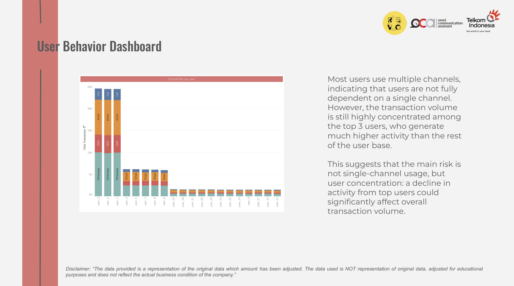

Disclaimer: The data provided is a representation of the original data which amount has been adjusted. The data used is NOT representation of original data, adjusted for educational purposes and does not reflect the actual business condition of the company.
OCA is a Communication Platform-as-a-Service platform that enables businesses to send messages through WhatsApp, SMS, Email, and Call. Previously, each channel was monitored separately, making it difficult for stakeholders to evaluate cross-channel performance, delivery effectiveness, revenue contribution, and user behavior in one integrated view. This project aimed to create a unified performance dashboard to support faster and more accurate business decision-making.